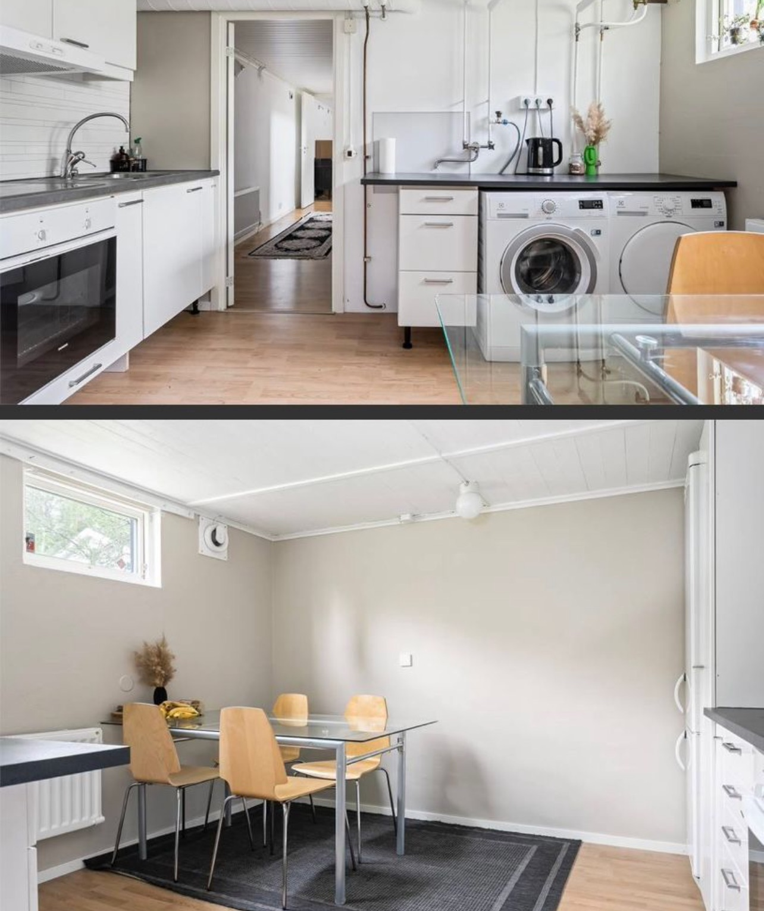
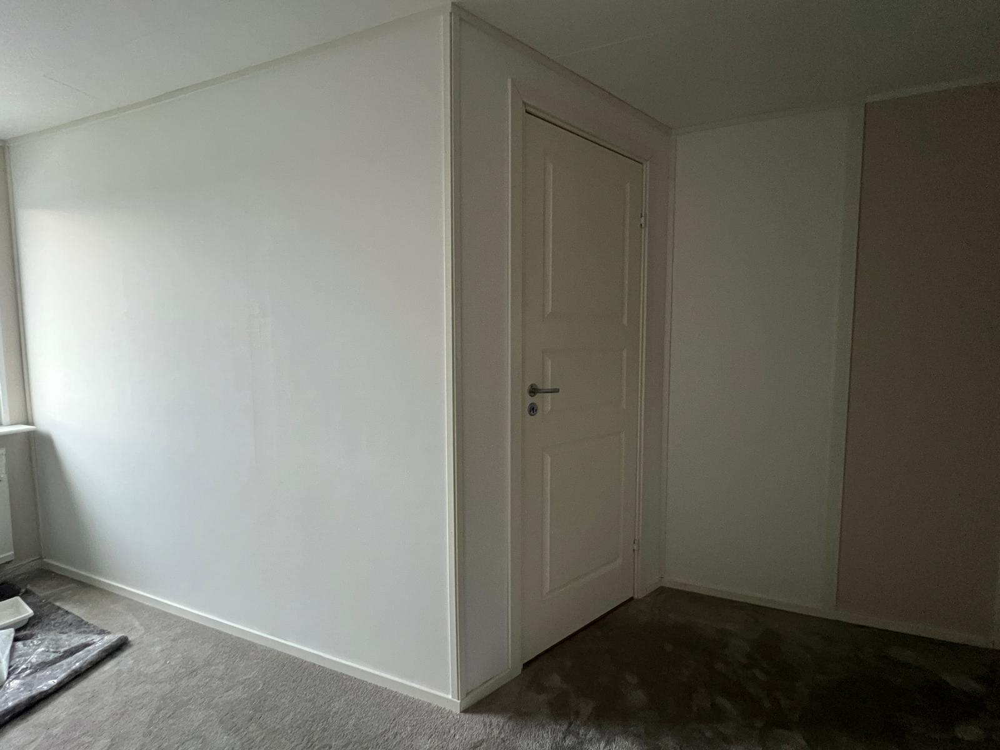

Utvalda Projekt
-

Renovering Källare, Järfälla
Ombyggnad av källare till funktionell boarea, inklusive isolering och nya ytskikt.
-

Renovering Kök, Järfälla
Reneovering av kök med minimalistisk design och nya ytskikt.
-

Tillbyggnation Extrarum, Viksjö
Skapande av ett större vardagsrum genom en tillbyggnation för att möta kundens växande behov.
-

Byggservice & Montage
Exempel på löpande byggservice och montagearbeten (Gullvivan staket, takbygge JUNO & Vällingby, nybyggnation Stora Sköndal).
-

Nybyggnation i Rallaren & Stinsen
Deltagande i större projekt för nybyggnation av bostadsrätter (Rallaren & Stinsen, Enskededalen HSB).
-

Projektledning skola, Vällingby
Arbetsledning och montage vid takbyggnation och stomkomplettering för förskola.